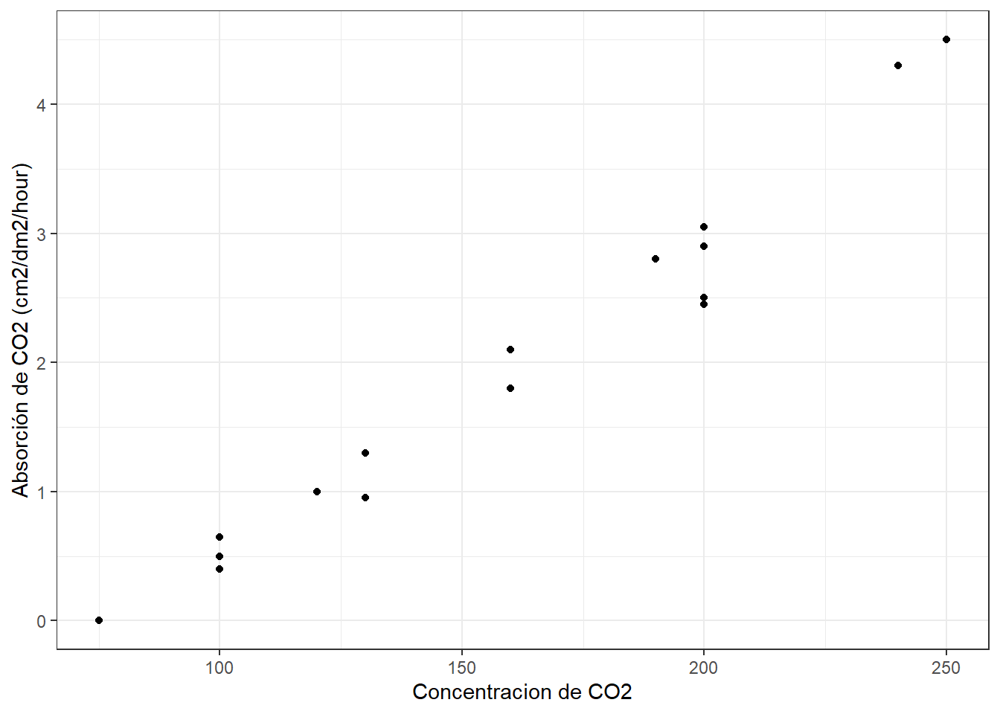

Capitulo 10 Correlación producto-momento de Pearson
Antes de comenzar la construcción de modelos lineales complejos, es importante observar la relación de datos para comprender cómo interactúan las diferentes variables. La correlación producto-momento de Pearson (para simplificarnos la vida hablaremos de correlación de Pearson) determina si existe asociación entre dos variables continuas. Dicho de otra forma, la correlación de Pearson analiza si dos variables continuas cambian de forma simultánea (están relacionadas).
El coeficiente de correlación de Pearson (r) es una medida de la fuerza de una asociación lineal entre dos variables continuas. El coeficiente de correlación de Pearson puede tomar un rango de valores de +1 a -1. Un valor de 0 indica que no hay asociación entre las dos variables. Un valor mayor que 0 indica una asociación positiva; es decir, a medida que aumenta el valor de una variable, también lo hace el valor de la otra variable. Un valor menor que 0 indica una asociación negativa; es decir, a medida que aumenta el valor de una variable, el valor de la otra variable disminuye.
Es importante destacar que la correlación de Pearson no tiene en cuenta si una variable se ha clasificado como una dependiente o independiente. Trata a todas las variables por igual. Incluso, las variables pueden estar medidas en diferentes unidades.
Empleamos la correlación de Pearson para determinar si dos variables cambian de forma independiente (\(H_0\)) o entonces, de forma alternativa, de forma conjunta (\(H_1\)).
Para el laboratorio de Hoy ujtilizaremos el ejemplo 9.1 de Mead et al. (1993). El cual indica:
El siguiente experimento busca establecer la absorción de \(CO_2\) de plantas de trigo en base a la concentración de este en el aire. Para esto se pasa aire con concentraciones variables de CO2 sobre plantas de trigo a una temperatura de 35 \(°C\) y se mide la absorción de \(CO_2\) por parte de las hojas de estas. Los valores de absorción (\(y\)) para diecisiete hojas, a diferentes concentraciones (\(x\)) se obtienen y son los datos que se encuentran en el archivo “trigo_co2.csv”.
10.1 Carguemos nuestros datos
10.2 Paso 1: Analicemos nuestros datos
Generemos un gráfico exploratorio de nuestras variables con ggplot:
## -- Attaching packages --------------------------------------------------------- tidyverse 1.2.1 --## v ggplot2 3.3.1 v purrr 0.3.4
## v tibble 2.1.3 v dplyr 0.8.3
## v tidyr 1.1.0 v stringr 1.4.0
## v readr 1.3.1 v forcats 0.4.0## Warning: package 'ggplot2' was built under R version 3.6.3## Warning: package 'tidyr' was built under R version 3.6.3## Warning: package 'purrr' was built under R version 3.6.3## -- Conflicts ------------------------------------------------------------ tidyverse_conflicts() --
## x dplyr::filter() masks stats::filter()
## x dplyr::lag() masks stats::lag()ggplot(data, aes(x= Concentracion, y= Absorcion))+
geom_point()+
ylab("Absorción de CO2 (cm2/dm2/hour)")+
xlab("Concentracion de CO2")+
theme_bw ()
A simple vista se ve una estrecha relación (relación positiva) entre nuestros datos de concentracion de \(CO_2\) en el aire y la absorción de este por las hojas de trigo.
10.3 Paso 2: Definir la hipótesis que queremos poner a prueba.
Nuestro interés es conocer si las variables Concentracion y Absorción cambian de forma simultánea (están relacionados). Para ello establecemos las siguientes hipótesis:
\[ H_0 = \text{Las variables Concentración y Absorción cambian de forma independiente} \\ H_A = \text{Las variables Concentración y Absorción cambian de forma conjunta} \]
10.4 Paso 3: Transformar la hipótesis en un modelo (prueba) estadístico.
El siguiente paso involucra poner a prueba si existe relación estadísticamente significativa entre Concentración y Absorción. Para ello empleamos la correlación de Pearson para determinar si las dos variables cambian de forma independiente (\(H_0\)) o entonces, de forma alternativa, de forma conjunta (\(H_A\)).
10.5 Paso 4: Evaluar los supuestos del modelo.
R ecordemos que todos los análisis paramétricos tienen supuestos sobre los datos subyacentes, y estos supuestos siempre deben confirmarse antes de utilizar estas pruebas.
Existen dos supuestos principales subyacentes a la correlación producto-momento de Pearson:
- Supuesto 1: Los datos de cada una de las 2 variables siguen una distribución normal.
Veamos para la variable Concentración
##
## Shapiro-Wilk normality test
##
## data: data$Concentracion
## W = 0.94734, p-value = 0.4158El valor de probabilidad (p>0.05) asociado a nuestro análisis sugiere que los datos de Concentración siguen una distribución normal
Veamos ahora para el caso de la variable Absorción
##
## Shapiro-Wilk normality test
##
## data: data$Absorcion
## W = 0.95391, p-value = 0.5212El valor de probabilidad (p>0.05) asociado a nuestro análisis sugiere que los datos de la variable Absorción siguen una distribución normal.
- Supuesto 2: las observaciones representan una muestra aleatoria de la población y las observaciones son independientes entre sí.
10.6 Paso 5: Interpretar los resultados del modelo.
Ahora que hemos comprobado que los supuestos requeridos se cumplen, vamos a proceder a realizar la correlación de Pearson para nuestras variables de interés:
##
## Pearson's product-moment correlation
##
## data: data$Concentracion and data$Absorcion
## t = 21.108, df = 15, p-value = 1.442e-12
## alternative hypothesis: true correlation is not equal to 0
## 95 percent confidence interval:
## 0.9538904 0.9942099
## sample estimates:
## cor
## 0.9835807En el resultado anterior:
* t: es el valor estadístico de la prueba t (t = 21.108),
* df: son los grados de libertad (df = 15),
* p-value: es el nivel de significancia de la prueba t (p-value = 1.442e-12).
* Sample estimates: es el coeficiente de correlación (r = 0.9835).
Con este resultado, rechazamos la hipótesis de que estas dos variables varían de forma independiente y concluimos que hay una correlación entre las dos. Podemos describir este resultado de la siguiente forma: Hemos detectado una correlación entre la concentración de \(CO_2\) en el aire y la absorción de este por las hojas de trigo (\(r_15\) = 0.9835, P = 1.442e-12).